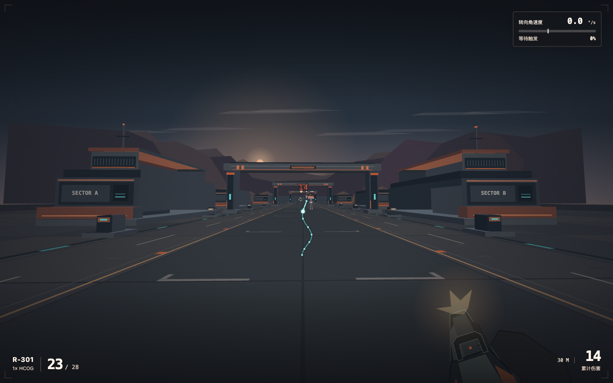

转发 Recoil-Lab-v1.2.0.html 即可。文件集成全部页面代码、样式、绘图和 Web Audio 音效，用桌面 Chrome 本地打开。
src/data/weapons.ts 和 src/engine/audio.ts 扩充四把武器，换弹按训练节奏缩短至 0.95–1.45 秒。枪械数值和逐发轨迹使用原创训练近似。src/engine/cadence.ts 调度三连发、四连发及射速爬升。src/main.ts、瞄具和界面接通 1–9 换枪与全模式引导。scripts/standalone.mjs 将构建出的代码和样式写入版本化 HTML，并在构建变化时保留已有版本。npm run build、npx tsc --noEmit 和 npm run check 均通过。60、144、165 和 240 Hz 验证了点射与射速爬升。